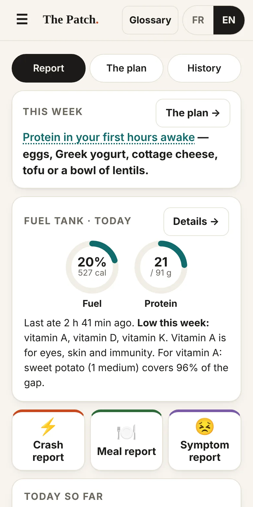
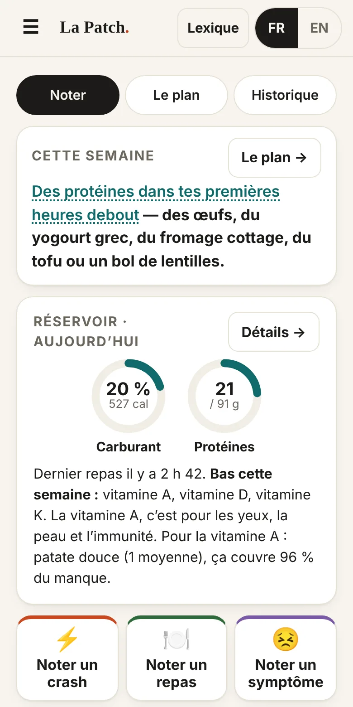
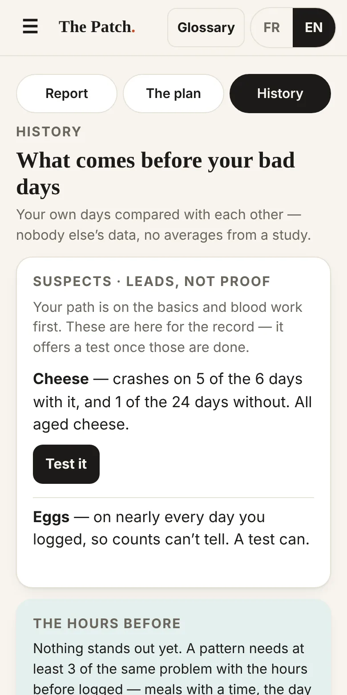
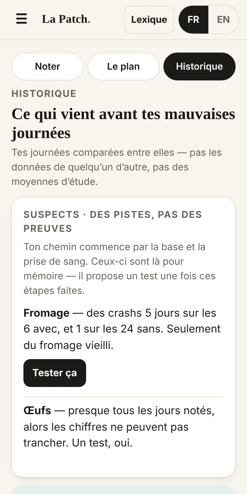

You’re not broken and you’re not lazy.Il n’y a rien de brisé en toi, et ce n’est pas de la paresse.
Find the foods that work for you, with everything your body needs. Energy for living, not just surviving.Trouve les aliments qui marchent pour toi, avec tout ce dont ton corps a besoin. De l’énergie pour vivre, pas juste pour survivre.
Tired, crashing, running on coffee or energy drinks? Three minutes of questions, and The Patch shows what’s running low and what to do about it this week — without taking away the things that get you through the day.À plat, des crashs, tu roules au café ou aux boissons énergisantes? Trois minutes de questions, et La Patch montre ce qui manque et quoi faire cette semaine — sans t’enlever ce qui te fait tenir.
For adults, 18 or older. No account. No ads. Nothing leaves your phone.Pour les adultes, 18 ans ou plus. Pas de compte. Pas de pub. Rien ne sort de ton téléphone.


What’s insideCe qu’il y a dedans
I need to keep going this weekJe dois tenir cette semaine
17 questions, about 3 minutes, the first time. It says your day back to you, then what to keep, what to swap, what to add on your budget — $0 works — and the one blood test to ask for.17 questions, environ 3 minutes, la première fois. L’app te résume ta journée, puis quoi garder, quoi remplacer, quoi ajouter selon ton budget — 0 $ marche — et la prise de sang à demander.
Crash and symptom reportsNoter un crash ou un symptôme
A few questions about the last few hours — fewer when your meals are logged. The most likely cause, and one move for tomorrow. A symptom — bloating, loose stools, a headache — takes a few seconds, with the time.Quelques questions sur les dernières heures — moins quand tes repas sont notés. La cause la plus probable, et un geste pour demain. Un symptôme — ballonnements, selles molles, mal de tête — se note en quelques secondes, avec l’heure.
Meal report and fuel tankNoter un repas, et le réservoir
Tap what you ate, with the time. The gauge shows today’s fuel and protein, and what’s low this week against Health Canada’s needs — pills and energy drinks included. Nothing logged yet? One minute on a normal day fills it. Got bloodwork? Type it in, and the tank shows where your stores are and whether they’re holding.Appuie sur ce que tu as mangé, avec l’heure. La jauge montre le carburant et les protéines du jour, et ce qui est bas cette semaine selon les besoins de Santé Canada — pilules et boissons énergisantes comprises. Rien de noté encore? Une minute sur une journée normale la remplit. Tu as une prise de sang? Entre les résultats, et le réservoir montre où en sont tes réserves et si elles tiennent.
Ask an AIDemande à une IA
Everything you answered, ready to paste into any AI chat, with rules that keep it honest. Nothing to explain from scratch.Tout ce que tu as répondu, prêt à coller dans n’importe quel chat d’IA, avec des règles qui le gardent honnête. Rien à réexpliquer.
What it looks likeDe quoi ça a l’air






Three tabsTrois onglets
ReportNoter
Where it opens every day. Log a meal, a crash or a symptom with the time, see today’s fuel and protein, and do the 15-second check-in — energy, sleep, caffeine, alcohol. When your plan is waiting on you, one line here says so.Là où l’app ouvre chaque jour. Note un repas, un crash ou un symptôme avec l’heure, vois le carburant et les protéines du jour, et fais le bilan de 15 secondes — énergie, sommeil, caféine, alcool. Quand ton plan a besoin de toi, une ligne te le dit.
The planLe plan
Where you land after the questions. Your path (the basics, then blood work, then your most likely suspect), your weight plan if you want one, and this week’s patch: what to keep, swap and add, and the blood test to ask for.Là où tu arrives après les questions. Ton chemin (la base, puis la prise de sang, puis ton suspect le plus probable), ton plan pour le poids si tu en veux un, et la patch de la semaine : quoi garder, remplacer et ajouter, et la prise de sang à demander.
HistoryHistorique
Your own days, compared. What comes before your bad days, your suspects, the hours before, your tests and your blood results. Nobody else’s data.Tes propres journées, comparées. Ce qui vient avant tes mauvaises journées, tes suspects, les heures d’avant, tes tests et tes résultats de prise de sang. Pas les données de quelqu’un d’autre.
What you’ll see, and whenCe que tu vas voir, et quand
- Today: your patch, and what’s low on a normal day.Aujourd’hui : ta patch, et ce qui est bas dans une journée normale.
- Weeks 1 and 2: the basics — enough fuel, caffeine and drinks kept away from sleep. Your first comparison shows in History after 7 finished days.Semaines 1 et 2 : la base — assez de carburant, la caféine et l’alcool loin du sommeil. Ta première comparaison apparaît dans l’Historique après 7 journées terminées.
- If the bad days stay: blood work — iron, B12, thyroid and celiac.Si les mauvaises journées restent : une prise de sang — fer, B12, thyroïde et maladie cœliaque.
- Then: your most likely suspect, one two-week test at a time — and what it shows.Ensuite : ton suspect le plus probable, un test de deux semaines à la fois — et ce que ça montre.
Your path, in The plan, takes you through these one step at a time, and Report tells you when it’s waiting on you. History shows the calendar, your suspects, the hours before and your tests.Ton chemin, dans Le plan, te fait passer par là une étape à la fois, et Noter te dit quand il a besoin de toi. L’Historique montre le calendrier, tes suspects, les heures d’avant et tes tests.
How it finds a probable causeComment elle trouve une cause probable
It looks two ways. Each crash is read on the spot from your answers. And over the days, the app compares the days a food or habit was there with the days it wasn’t. Nothing is called a cause until your own test backs it up.Elle regarde de deux façons. Chaque crash est lu sur-le-champ à partir de tes réponses. Et au fil des jours, l’app compare les journées où un aliment ou une habitude était là avec celles où il ne l’était pas. Rien n’est appelé une cause tant que ton propre test ne le confirme pas.
Each crash, on the spot.Chaque crash, sur-le-champ.
The report asks when it hit, how it felt, your sleep, caffeine and alcohol, and what you ate in the 4 hours before — already ticked from your meals. Each kind of crash has a fingerprint: sugar on an empty stomach 1 to 3 hours before, then shaky and starving; hours with nothing eaten; a pill wearing off at the same hour every day. The best match is the likely cause, with one move for tomorrow. After 3 reports, it looks for the same cause, or the same time of day.Le rapport demande quand c’est arrivé, comment tu te sentais, ton sommeil, la caféine, l’alcool, et ce que tu as mangé dans les 4 heures avant — déjà coché d’après tes repas. Chaque sorte de crash a son empreinte : du sucre dans un estomac vide 1 à 3 heures avant, puis les tremblements et la faim; des heures sans rien manger; une pilule qui lâche à la même heure chaque jour. La meilleure correspondance donne la cause probable, avec un geste pour demain. Après 3 rapports, l’app cherche la même cause, ou la même heure de la journée.
Across days, three comparisons.Au fil des jours, trois comparaisons.
Check-in habits — late caffeine, energy drinks, drinks by amount (3–5, 6 or more), short nights — against the next night’s sleep, the next day’s energy and crash days. Food groups — big dairy servings (lactose), cheese, cured meat and canned fish, eggs, shakes and bars, sweets, some fruits, energy drinks, big meals — against crash days, loose stools, and headaches or itch; and high-fibre days (20 g or more, counted from what you log) against loose stools. And the hours before: for each crash or symptom noted with a time, the meals in the 4 hours before (6 for loose stools or bloating), against the same hours on days it didn’t happen.Les habitudes du bilan — la caféine tard, les boissons énergisantes, l’alcool selon la quantité (3 à 5, 6 ou plus), les nuits courtes — contre le sommeil de la nuit d’après, l’énergie du lendemain et les jours de crash. Des groupes d’aliments — grosses portions de produits laitiers (lactose), fromage, charcuterie et poisson en conserve, œufs, shakes et barres, sucreries, certains fruits, boissons énergisantes, gros repas — contre les jours de crash, de selles molles, et de maux de tête ou de démangeaisons; et les journées riches en fibres (20 g ou plus, comptées à partir de ce que tu notes) contre les selles molles. Et les heures d’avant : pour chaque crash ou symptôme noté avec l’heure, les repas des 4 heures avant (6 pour les selles molles ou les ballonnements), comparés aux mêmes heures les jours où ça n’est pas arrivé.
The bar for a lead.Le seuil pour une piste.
At least 3 times with the food, the problem at least 30 percentage points more often than without it, and a gap that big would come up less than 1 time in 50 if the food did nothing. On simulated people with no real food effect, about 4 to 5% still get a false lead at any one look, and about 1 in 6 at some point over six weeks of looking every day — so a lead is a reason to test, not an answer.Au moins 3 fois avec l’aliment, le problème au moins 30 points de pourcentage plus souvent que sans, et un écart aussi grand arriverait moins d’une fois sur 50 si l’aliment n’y était pour rien. Sur des personnes simulées sans aucun effet des aliments, environ 4 à 5 % ont quand même une fausse piste à chaque vérification, et environ 1 sur 6 à un moment ou un autre en six semaines à regarder chaque jour — alors une piste, c’est une raison de tester, pas une réponse.
In what order.Dans quel ordre.
The plan asks for one change at a time, cheapest first. The basics: enough fuel through the day without one huge meal, caffeine done 8 hours before bed, the last drink 3 hours before. If the bad days stay, blood work — iron, B12, thyroid and the celiac test — before cutting any food, since that test needs gluten in the diet and cutting a drink won’t fix low iron. Then the strongest suspect. Every step has “I’ll do it — remind me” and “I can’t — next”: say you can’t, and the app moves to the next-best option instead of stopping. The counting runs from day one either way.Le plan demande un changement à la fois, le moins coûteux d’abord. La base : assez de carburant dans ta journée sans un énorme repas, la caféine finie 8 heures avant le coucher, le dernier verre 3 heures avant. Si les mauvaises journées restent, une prise de sang — fer, B12, thyroïde et test cœliaque — avant de couper un aliment, parce que ce test a besoin de gluten dans l’alimentation et que couper un verre ne réglera pas un manque de fer. Ensuite, le suspect le plus fort. Chaque étape a « Je le fais — rappelle-moi » et « Je ne peux pas — la suite » : dis que tu ne peux pas, et l’app passe à la meilleure option suivante au lieu d’arrêter. Le compte roule dès le premier jour de toute façon.
Your test checks it.Ton test vérifie.
Two weeks without the suspect, compared with the four weeks before, then three days back to normal (never for drinks: the two weeks are the answer). Two weeks only catch a big difference: “no clear change” doesn’t rule a food out, and when it looks better but is too close to call, you can keep going two more weeks. If the problem comes back on two of the days you have it again, and you don’t have it on most days anyway, that’s the clearest sign one person can get.Deux semaines sans le suspect, comparées aux quatre semaines d’avant, puis trois jours comme avant (jamais pour l’alcool : les deux semaines sont la réponse). Deux semaines ne voient qu’une grosse différence : « pas de changement clair » n’écarte pas un aliment, et quand ça semble mieux mais que c’est trop serré pour trancher, tu peux continuer deux semaines de plus. Si le problème revient deux des jours où tu en reprends, et que tu ne l’as pas la plupart des jours de toute façon, c’est le signe le plus clair qu’une personne puisse avoir.
What it can’t see.Ce qu’elle ne voit pas.
A day that isn’t marked complete counts as unknown, not as “didn’t eat it”. A food outside the groups can’t become a suspect. And warning signs — blood in the toilet, black stool, chest pain — aren’t patterns: the app tells you who to see, and how soon.Une journée qui n’est pas marquée complète compte comme inconnue, pas comme « pas mangé ». Un aliment hors des groupes ne peut pas devenir un suspect. Et les signes d’alarme — du sang dans la toilette, des selles noires, une douleur à la poitrine — ne sont pas des tendances : l’app te dit qui voir, et quand.
Private by designPrivé, par conception
There’s no account, and the app has no server of its own. Your answers live only in this phone’s browser storage, and the app makes no outside requests — no tracking, no analytics. Once installed, it works offline.Il n’y a pas de compte, et l’app n’a pas de serveur à elle. Tes réponses restent seulement dans la mémoire du navigateur de ce téléphone, et l’app ne fait aucune requête vers l’extérieur — pas de pistage, pas de statistiques. Une fois installée, elle marche hors ligne.
The flip side: if you clear your browser data, it’s gone — and on iPhone, Safari can also erase it if a week of using Safari goes by without you opening the app, unless it’s on your Home Screen. The menu has a backup — a file or a block of text you keep. Make one after your first week.Le revers : si tu effaces les données du navigateur, tout part — et sur iPhone, Safari peut aussi l’effacer si une semaine d’utilisation passe sans que tu ouvres l’app, sauf si elle est sur ton écran d’accueil. Le menu a une sauvegarde — un fichier ou un bloc de texte que tu gardes. Fais-en une après ta première semaine.
Honest about the evidenceHonnête sur les preuves
Every underlined word opens what it means, how sure we are, and the sources — Health Canada’s nutrient tables, the Canadian Nutrient File, guidelines and trials.Chaque mot souligné ouvre ce qu’il veut dire, à quel point on est sûr, et les sources — les tables de Santé Canada, le Fichier canadien sur les éléments nutritifs, des guides et des essais.
Solid evidencePreuves solidesLikelyProbableWorth a tryÇa vaut l’essaiOur reasoningNotre raisonnement
Harm reduction, not abstinence: what you keep stays on the list. The app works around it.Réduction des méfaits, pas abstinence : ce que tu gardes reste sur la liste. L’app s’adapte autour.
Put it on your phoneLa mettre sur ton téléphone
It installs from the browser — no app store. It gets its own icon, opens full screen, and works offline.Elle s’installe à partir du navigateur — pas de magasin d’applis. Elle a sa propre icône, s’ouvre en plein écran et marche hors ligne.
This browser didn’t offer a one-tap install. Follow the steps for your phone below.Ce navigateur n’a pas offert l’installation en un geste. Suis les étapes pour ton téléphone plus bas.
Android (Chrome)
- Tap Open The Patch.Appuie sur Ouvrir La Patch.
- Tap Install The Patch on the first screen, or Install on the black bar at the bottom — or open Chrome’s menu ⋮ and choose Install app (or Add to Home screen).Appuie sur Installer La Patch au premier écran, ou sur Installer dans la barre noire en bas — ou ouvre le menu de Chrome ⋮ et choisis Installer l’application (ou Ajouter à l’écran d’accueil).
- Open it from the new icon from now on.Ouvre-la avec la nouvelle icône à partir de maintenant.
Samsung phone? Use Chrome for this — Samsung’s own browser often fails to install apps like this one. Or, in Samsung’s browser: menu ☰ → Add page to → Home screen.Un Samsung? Prends Chrome pour ça — le navigateur de Samsung a souvent de la misère à installer ce genre d’app. Ou, dans le navigateur de Samsung : menu ☰ → Ajouter la page à → Écran d’accueil.
iPhone (Safari)
- In Safari, tap Open The Patch.Dans Safari, appuie sur Ouvrir La Patch.
- Tap the Share button ⬆︎, scroll down, tap Add to Home Screen, then Add.Appuie sur le bouton Partager ⬆︎, descends, appuie sur Sur l’écran d’accueil, puis Ajouter.
- Open it from the new icon. The copy in Safari and the installed one keep separate data — use the icon.Ouvre-la à partir de la nouvelle icône. La copie dans Safari et celle installée gardent des données séparées — utilise l’icône.
Already using it somewhere else? In the old copy, open the menu ☰ → Back up my data. In the installed app, menu → Restore from a backup, and paste or pick it.Tu l’utilises déjà ailleurs? Dans l’ancienne copie, ouvre le menu ☰ → Sauvegarder mes données. Dans l’app installée, menu → Restaurer une sauvegarde, et colle-la ou choisis-la.